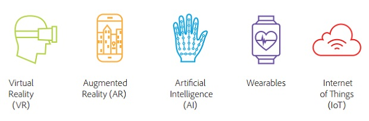

At its most basic level, blockchain is literally just a chain of blocks, but not in the traditional sense of those words. When we say the words “block” and “chain” in this context, we are actually talking about digital information (the “block”) stored in a public database (the “chain”). “Blocks” on the blockchain are made up of digital pieces of information. Specifically, they have three parts:
What is autonomy? Autonomy is the ability to make your own decisions. In humans, autonomy allows us to do the most meaningful, not to mention meaningless, tasks. This includes things like walking, talking, waving, opening doors, pushing buttons and changing light bulbs. In robots, autonomy is really no different.Autonomous robots, just like humans, also have the ability to make their own decisions and then perform an action accordingly. A truly autonomous robot is one that can perceive its environment, make decisions based on what it perceives and/or has been programmed to recognise and then actuate a movement or manipulation within that environment. With respect to mobility, for example, these decision-based actions include but are not limited to the following basics: starting, stopping, and maneuvering around obstacles that are in their way.
Immersive technology is an integration of virtual content with the physical environment in a way that allows the user to engage naturally with the blended reality. In an immersive experience, the user accepts virtual elements of their environment as part of the whole, potentially becoming less conscious that those elements are not part of physical reality.
Immersive technologies include: Virtual reality (VR) – a digital environment that replaces the user’s physical surroundings.Augmented reality (AR) – digital content that is superimposed over a live stream of the physical environment.Mixed reality (MR) – an integration of virtual content and the real world environment that enables interaction among elements of both.
